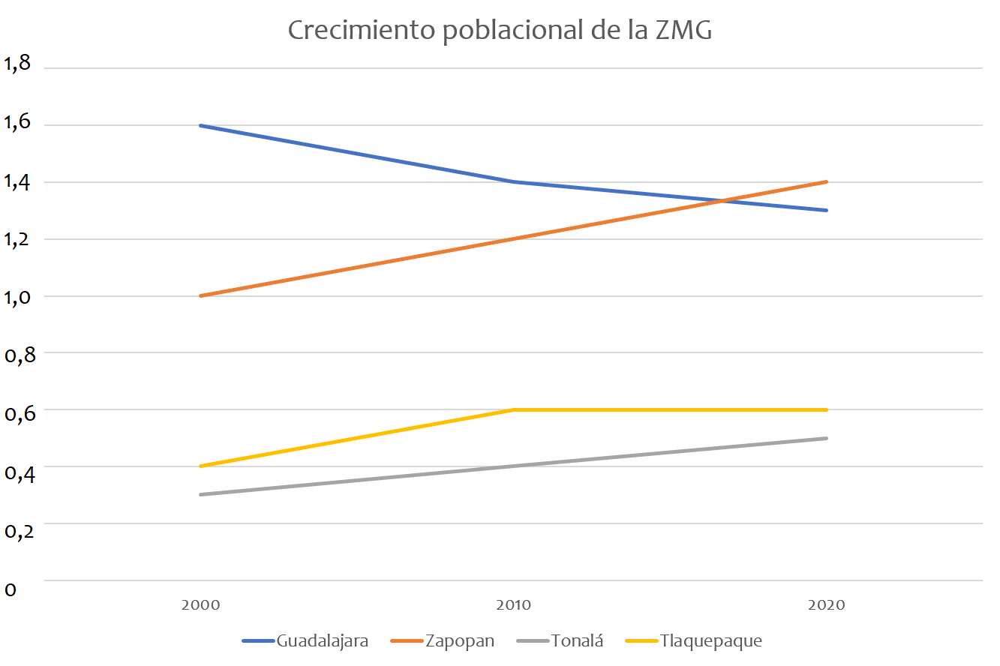
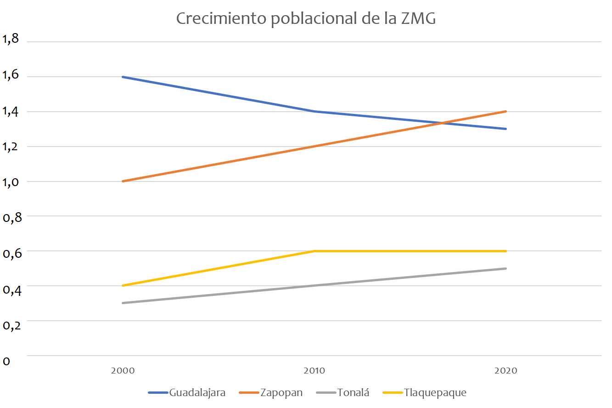

Acerca de
La ZMG (Zona Metropolitana de Guadalajara) es una región ubicada en el centro del estado de Jalisco, en los municipios de Guadalajara, Zapopan, San Pedro Tlaquepaque, Tonalá, y Tlajomulco. Es actualmente la tercera zona urbana más poblada de México despues de la Zona Metropolitána de Monterrey y la Zona Metropolitana del Valle de México. Cuenta con aproximádamente 2,551 km2 de superficie. Las principales actividades económicas de la zona son la industria manofacturera, el comercio, servicios personales, comunales, sociales y de mantenimiento.


Población
Actualmente la ZMG cuenta con 5,179,874 habitantes y una densidad de población de cada 2,145 habitantes por kilómetro cuadrado, siendo Zapopan el municipio con mas habitantes (1,476,491) y con mayor densidad de población (9,721/km2)
 

Cosas para hacer
- Don't forget to go to Guadalajara's dowtown
- You could eat a "Torta Ahogada"
- Don't forget you can visit the Guadalajara's zoo
- You should go to the "Romería"
- We suggest you visit Chapala's lagoon
- Don't forget drink a "Tejuino"
- What if you go to the Metropolitan park?
- How about you go to a day of de death parade?
- No olvides ir al centro de Guadalajara
- Podrías comer una "torta ahogada"
- No olvides que puedes visitar el zoológico de Guadalajara
- Deberías ir a la "Romería"
- Sugerimos que visites la laguna de Chapala
- No olvides beber un "Tejuino"
- Y si vas al Parque Metropolitano?
- Qué tal si vas a un desfile de Día de Muertos?